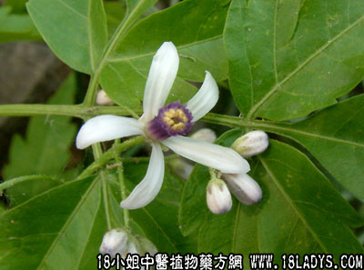

森树(中药材植物名:楝)(植物科目:楝科)

别名：苦楝。
植物名：楝。
生长环境：本品为落叶乔木。村庄，屋宅旁常栽培，或野生于山野。粗生植物，无论肥沃、潮湿、荒瘠之地，或沿海碱性土壤，均能生长。
分布：我国中部及南部各省均有，广东各地均有栽培。
入药部分：根、茎、二层皮。
采集期：全年。
自采地点：市郊山地。
性味：性凉、味苦。
功能：驱虫、消积。
主治、用量和用法：
1、蛔虫：干二层皮3至5钱，清水煎服；
2、尧虫：用法同上。
验方：（治蛔虫方）森树二层皮3钱、旱莲草3钱、葫芦茶4钱、清水二碗，煎成一碗服。
（方解）森树二层皮，能驱蛔虫，民间早有此经验，配以葫芦茶，取其清热而有驱虫，佐以旱莲草，取其清肝火。因儿童患蛔虫病，每有肝火盛之症状，甚则发热，用此方有清肝驱蛔之效。
（方歌）消积驱蛔森树皮，小儿偷瘦最相宜，葫芦茶入旱莲草，虫去积除体自肥。
附录：（根）1、治胃痛：干根5钱至1两半，清水煎服；2、气痛：用法同上；3、小肠疝气：用法同上。
（果）治小肠气痛：干用5钱至1两，清水煎服。
（叶）治跌打肿痛：用生叶4两，擂烂取汁冲热酒服，将渣外敷患处。
（寄生）治胃痛：干用1至2两，清水煎服。
参考资料：《中医杂志》（1959.4）内载：苦楝根（干）皮治疗蛔虫病有一定疗效，但根皮驱虫的效果远高于干皮，根皮的剂量不同，疗效高低亦不同，而干皮则加大剂量亦无显著疗效，在煎法上由温火和烈火之不同，驱虫疗效亦有差别，根皮6两，温火煎到11小时，服后效率12.38%，但从干皮来看,3~4两，温火煎汁，服后疗效仅是0.13至8.3%，而半斤干皮，用烈火煎汁，取药后的58例，却无一例驱虫，苦楝根皮剂量7～18岁的用至6两，成人酌增。部分病例有不同的反应，一般无须处理。除脾胃虚寒外，无禁忌。
《中华妇产科杂志》（1959.3）介绍：楝根皮治疗阴道滴虫，煎剂治疗27例，全剂治疗6例，用1个疗程亦不到一个疗程后，其效果非常显著，经三次检查都是阴性，无刺激，无副作用，无气味，用法：阴道注入煎液5CC后，塞入浸有煎液的的纱布球，第二天取出，5～10次为一疗程。
《中华妇产科杂志》（1957.1）内载：上海市第十人民医院妇产科，自1955年5月至1956年4月，一年内共试用中药苦楝根皮驱除蛔虫共230例，并分析报告110例，浓缩法一次阴性者64例，占80%。对钩虫亦有驱除作用。服后不必服泻药也能排虫，无毒性或较重之副作用除先兆或不完全流产时，固不必急于驱虫，避免引起各种刺激及剧中医传统，在妊娠初期不用外，可用于任何妇产科病人或产妇。
《广东省中医验方交流汇编》内载：治伤口烂生虫方：苦楝树皮煮水洗之，其虫立死。
《广州市中医验方选集第一集》内载：治羌片虫病方：森树皮1两，生甘草半钱，煎取一碗，连服四次有效。
合肥市《中医验方汇编第一集》介绍治秃疮验方：苦楝树花4两，将花装在瓦盆中，封口，埋于地下，60天以后，即化为溶液，以溶液擦秃疮上。
《江苏中医》（1960年第五期）内载：用苦楝根皮合并山杜年蛔虫145例。1、103例用苦楝根皮煎剂，每3克计算，最高量不超过45克。与山杜年同服，有效率54.4%，2、42例用苦楝根皮煎剂，每发5～6克计算，最高量不超过90克与山杜年同服，有效率80.5%。
《湖北验方集锦第一集》种归县除害灭病经验交流介绍：杀灭虱蚤，用苦楝叶铺于席下。